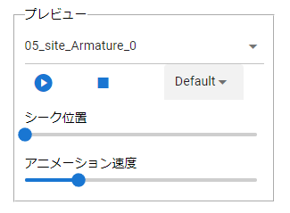

10.4. OtherObject
OtherObject basically handles general 3D models other than VRoid/VRM. There is only one IK marker per object except for VRoid/VRM, including OtherObject.

The display size follows the actual size of the 3D object, so it may differ greatly from VRoid/VRM and other objects. In that case, please change it in the “Magnification” property of the “Common” tab.
The IK marker will be attached to the object origin. If the actual object and the origin are misaligned when outputting with Blender, etc., the IK marker and the actual object will also be misaligned in this application. If the misalignment is not what you intended, correct it appropriately on the output source app side.
Note
10.4.1. Play animation
Animation of 3D objects can be controlled to play even in the animation project by this application.
preview playback |
for animation registration |
 |
|
It will play instantly. This operation is not registered in the keyframe. |
Register the keyframe after selecting “Play” or “Stop”. |

Select the animation name to play.
Adjust the playback mode, animation speed, etc. as necessary.
Play and check.
If you like, select the playback state in the animation state (for registration) and register the keyframe.
Note
The animation data of the 3D object is not expanded or displayed in the keyframe, and only the states of play, pause, stop, and seek are registered in the keyframe.
Hint
You can freely play the animation of the object even if you register only the seek position by changing the playback position in the key frame instead of playing or stopping.
例）あるアニメーションを持つFBXをOtherObjectにした
1フレーム目: アニメーションの状態（登録用） = 再生位置変更、シーク位置 = 0.855時点
2フレーム目: アニメーションの状態（登録用） = 再生位置変更、シーク位置 = 0.124時点、間隔(duration)は1秒。
→ このFBXは逆再生のようにアニメーションする。
10.4.2. Texture
If the 3D object has multiple textures, you can select the texture and change the settings in detail. It’s exactly the same as the VRM setting.
See Texture for details.